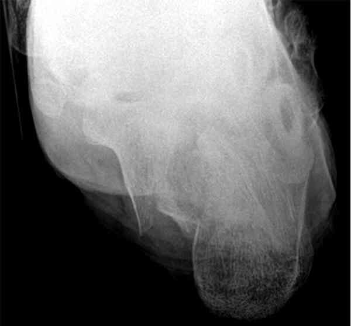
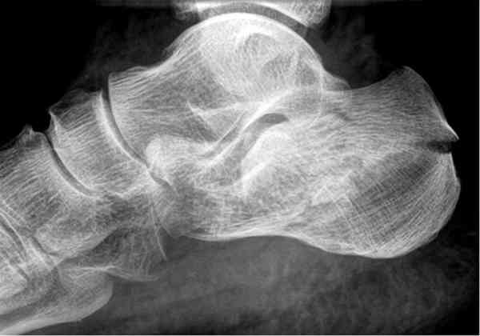
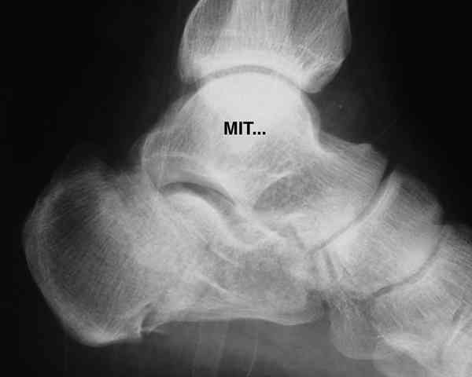
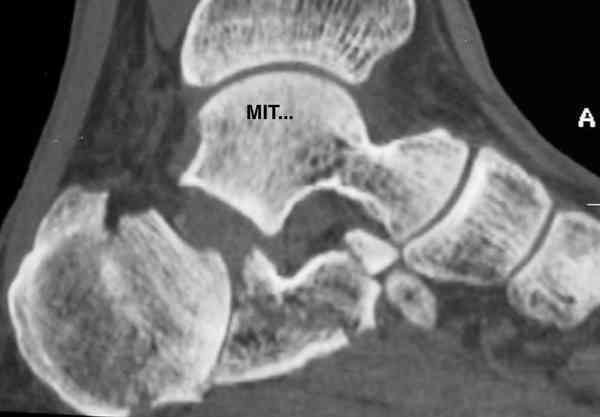
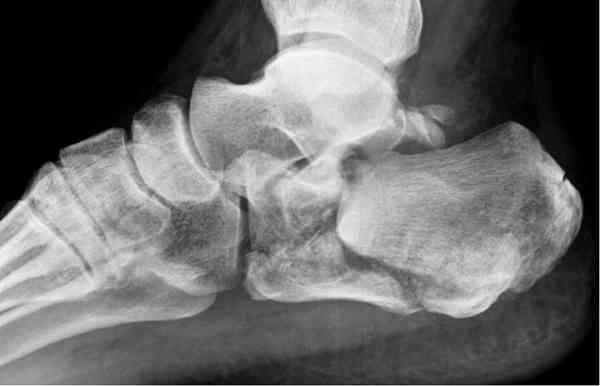
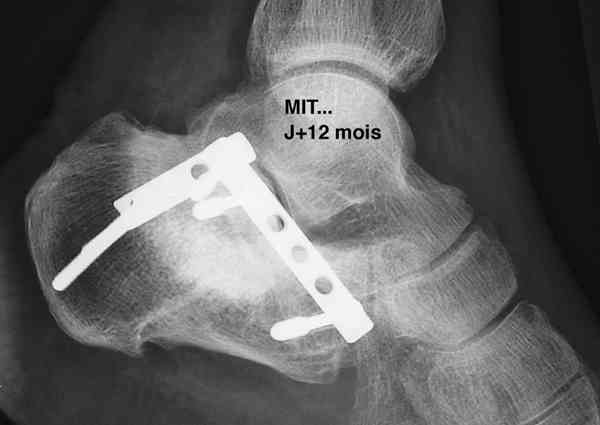

Bienvenue Sur Medical Education
Fractures : calcanéum
Spécialité : traumatologie /
Points importants
-
Les fractures déplacées nécessitent une prise en charge chirurgicale
-
Si le chirurgien n'est pas disponible, il faut hospitaliser le patient, installer le membre en position surélevée et envelopper le pied dans un gros pansement humide (alcool + glycérine) pour éviter l'apparition de phlyctènes
Présentation clinique / CIMU
SIGNES FONCTIONNELS
-
Douleur de l'arrière pied et impotence fonctionnelle
CONTEXTE
Présentation clinique / CIMU
SIGNES FONCTIONNELS
- Douleur de l'arrière pied et impotence fonctionnelle
CONTEXTE
Circonstances de survenue
- Chocs directs sur le talon
EXAMEN CLINIQUE
-
Le diagnostic est évident lorsque le déplacement est important :
- l'arrière-pied est empâté, augmenté de volume, avec une ecchymose sous-malléolaire interne et externe
- l'impotence fonctionnelle est totale avec impossibilité de prendre appui sur le talon et sur l'avant-pied
- Le diagnostic est moins évident quand la fracture est non déplacée
- Cependant, l'impossibilité de prendre appui sur le talon est quasi constante
- Lorsque la fracture est vue tardivement (quelques heures), il existe souvent des phlyctènes qui vont malheureusement retarder la prise en charge chirurgicale
_913
- - -
Examen clinique de cheville et de pied
Signes paracliniques
IMAGERIE
Radiographie
-
Elle viendra confirmer le diagnostic, il faut demander :
- une incidence de profil du calcanéum
- ainsi qu'une incidence rétro-tibiale de Böhler qui permettra de visualiser la surface articulaire sous-astragalienne
 _454 Photo Incidence rétro-tibiale de Böhler du calcanéum
Scanner
- Il devient de plus en plus incontournable pour préciser les lésions (surtout lorsque la fracture est peu déplacée) et pour rechercher une éventuelle luxation associée des tendons péroniers (tendons fibulaires)
Diagnostic étiologique
On distingue
- Les fractures extra-thalamiques : grosse tubérosité et grande apophyse
-
Les fractures thalamiques (articulaires) :
- il s'agit habituellement d'un enfoncement associé à une séparation à l'origine d'une incongruence entre thalamus et surface articulaire sous-astragalienne. L'enfoncement peut être vertical ou horizontal
-
on individualise 5 stades (Duparc) en fonction du déplacement et du nombre de fragments :
- stade I : fracture thalamique non déplacée
- stade II : fracture-luxation (luxation en dehors du calcanéum, le sustentaculum tali restant solidaire de l'astragale)
-
stade III : fracture enfoncement-séparation à 3 fragments
-  _450 Photo Fracture enfoncement-séparation du calcanéum au stade 3
-
stade IV : fracture enfoncement-séparation à 4 fragments avec atteinte de la corticale plantaire
-  _451 Photo Fracture enfoncement-séparation du calcanéum au stade 4 : incidence de profil
-  _452 Photo Scanner de la fracture précédente
- stade V : fracture comminutive avec enfoncement thalamique majeur

_453
Photo
Fracture enfoncement-séparation stade 5 du calcanéum
Traitement
En cas de fractures déplacées
- Elles nécessitent une prise en charge chirurgicale : relèvement du thalamus et ostéosynthèse de préférence par plaques vissées miniaturisées
 _455 Photo Relèvement et ostéosynthèse du thalamus
- Si le chirurgien n'est pas disponible, il faut hospitaliser le patient, installer le membre en position surélevée et envelopper le pied dans un gros pansement humide (alcool + glycérine) pour éviter l'apparition de phlyctènes
En cas de fracture non déplacée
(ne pas hésiter à demander un scanner si l'enfoncement est douteux)
- On peut se contenter d'un traitement fonctionnel surtout chez les personnes jeunes capables de marcher avec des cannes-béquilles
-
L'immobilisation dans une botte de Graffin (botte de marche fenêtrée au niveau du talon) n'est indiquée que chez les patients âgés, incapables de béquiller :
- ajouter alors un traitement anticoagulant préventif par HBPM
Devenir / orientation
CRITERES D'ADMISSION
-
Fracture déplacée
CRITERES DE SORTIE
-
Fracture non déplacée
ORDONNANCE DE SORTIE
-
Prescription de bandes élastiques à visée anti-oedème
-
Antalgiques et AINS
RECOMMANDATIONS DE SORTIE
-
Protocole RICE
-
Prescription d'une rééducation, en piscine de préférence
-
Décharge de 60 à 90 jours en fonction du type de fracture
Bibliographie
-
Traumatologie à l'usage de l'urgentiste. Sous la direction de Dominique Saragaglia. Editions Sauramps Médical. 2004
Bibliographie
-
Traumatologie à l'usage de l'urgentiste. Sous la direction de Dominique Saragaglia. Editions Sauramps Médical. 2004
Auteur(s) : Jean-Jacques BANIHACHEMI, Dominique SARAGAGLIA